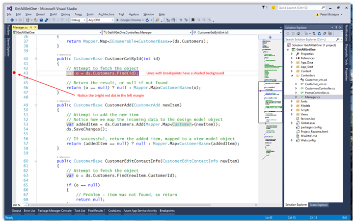
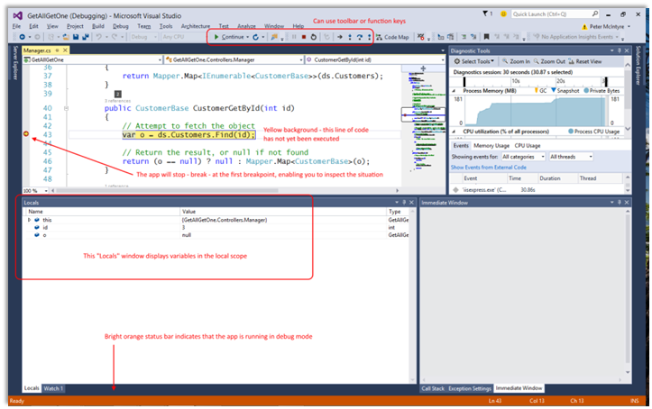
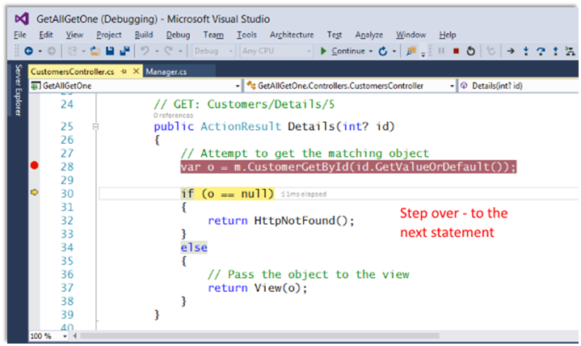
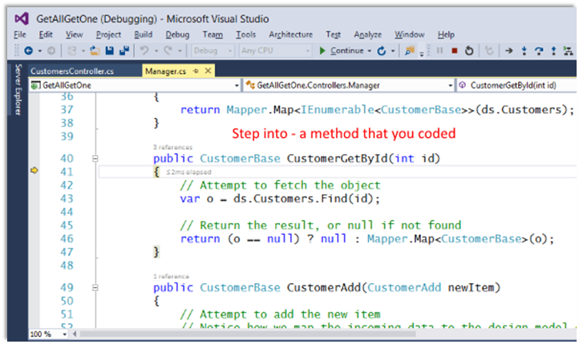
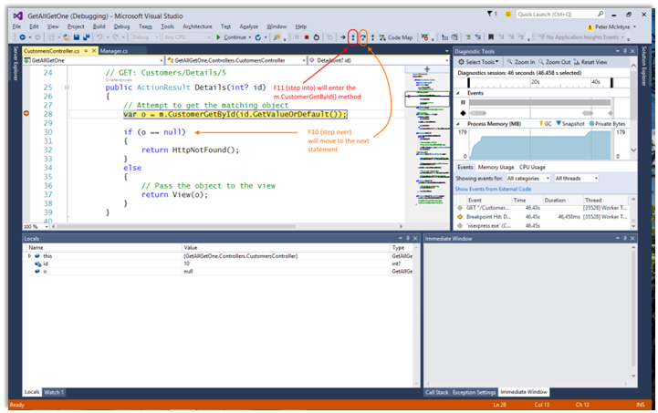
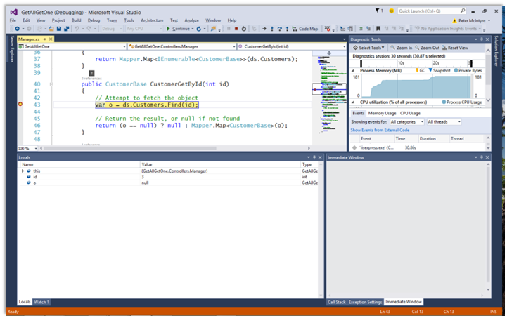
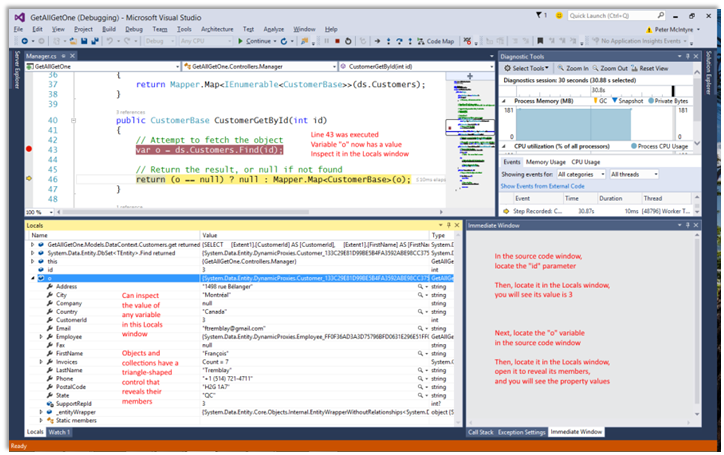

INT422 – Lecture 4-2
Debugging introduction. Begin work on Assignment 4.
Textbook coverage
As announced last week, the textbook will have a supporting role as you learn new topics from these notes and your classroom sessions. Use the table-of-contents and the index to locate the topic, and then read about it there. A reminder: The textbook does not use view model classes in its discussions and code examples. We do.
Homework reminder
In the last class, your teacher may have assigned homework, to complete the “pattern summary” quick reference document. Please submit it to the blackboard before the end of Saturday of week 4. Print out a hard copy for your own use as a quick reference."
Code examples
Debugging introduction
Debugging introduction
This section introduces students to the Visual Studio debugger.
At this point, you have used Visual Studio for a few weeks, or for a few months or academic terms. It is likely that you have a little experience with coding errors, which appear when you do a build/compile. The “Error List” window/panel at the bottom of the editor area shows a list of errors and warnings.
❝Did you know…?
Did you know that you can simply double-click the error, and the code editor will open the source code file, and position the cursor at the point of the error?
Or, did you know that you can right-click an error, and it will (among other tasks) enable you to get more detailed info about the error in another window or browser window?
However, you likely also have a little experience with an app – e.g. an ASP.NET MVC web app – which DOES build/compile correctly and without errors, but it has a runtime error.
The error will appear in the browser. Often, it describes what is wrong, with the implication that you will be able to fix it. For beginners, that implication may not be valid, and you may still need help. (Yes, you can contact your teacher in those situations.)
The Visual Studio debugger can help you fix these errors. It can also help you as you write code, and (for example) work through the code that implements a somewhat-complex algorithm or coding plan.
To get started, read and study this MSDN document:
Getting Started with Debugging in Visual Studio 2015
You can skim the top 2/3 of the document. The part that you MUST read and study is titled:
Debugging Your Running Code
Important concepts in the debug experience
There are several important concepts that you must know at the beginning of your debugging experience.
Breakpoint
A breakpoint is a line marker/indicator that will stop execution before the line of code is executed. In the code editor, it appears as a bright red dot.
The following image shows a full-screen Visual Studio window, which has a breakpoint.

Set (or remove) a breakpoint in one of two ways:
If you have many (many!) breakpoints, you can view a list of them, and manage them, in your “breakpoints” window/panel. On the Debug menu, choose Windows > Breakpoints.
When writing code, you can consider adding breakpoints in these scenarios:
When you introduce new code, set a breakpoint at the beginning of the code block, and step through the code (described below) to make sure it is behaving as expected.
If you have implemented a complicated behavior, set breakpoint(s) for the algorithmic code so you can inspect the values of the variables and data when the program breaks.
In a Manager class, set a breakpoint when you are making changes in the data store. For example, the “add new” and “edit existing” use cases. This enables you to inspect, and compare, values in view model objects, with design model objects.
Start the app with the debugger
In the past, you have used Ctrl+F5 to run your app. Now, to start the app with the debug environment, simply press F5. Use the app until it runs the code that has a breakpoint.
The Visual Studio window (usually) gets the foreground focus.

The next line of code to be executed has a yellow background. At this point in time, you can:
Step over – F10
“Stepping” is the process of executing code, one line at a time.
Execute the line of code by pressing the F10 function key (or by using the debug toolbar). F10 is “step over”.
In the image below, it would move the pointer from line 28, to line 30.

Step into – F11
If the current (pointed to) line of code has a method call, to a method that YOU wrote, you can jump to the beginning of that method. F11 is “step into”.
In the image below, it would move the pointer from line 28 in the CustomersController.cs source code file, to line 41 in the Manager.cs source code file.

While in the method, you can continue to F10 “step over”, or F11 “step into”, if appropriate.
If/when you want to leave that method, you can Shift+F11 to “step out” of the method, and return to the line of code that was pointed to before entering the method.
Here’s a full-screen image that summarizes the difference between “step into” and “step over”.

During a break, inspect variable values
During a break in execution, you can inspect variable values, in at least two commonly-used ways:
The following image shows the Locals window – lower-left – at the first breakpoint.

Assume that F10 (step over) was done. It moves the line pointer from line 43 to line 46. Notice the contents of the Locals window now.

Hands-on with the debugger, and the code example
Today’s code example – DebuggingIntro – is a copy of the “EditDelete” web app from last week.
It has been changed, to introduce errors, and to get you started with a debugging experience. Your teacher will take you through the code example, in your hands-on computer-lab class/session.
Example error conditions. Go through them in sequence.
Summary, and more information
There are four MSDN documents that will help you with the debugging experience. Read and study them.
Getting Started with Debugging in Visual Studio 2015
Navigating through Code with the Debugger
Work on Assignment 4
Your professor will guide students as we get started on Assignment 4.
Before you leave the room at the end of the time slot, ensure that you give the Work Report to your professor, for the in-class grading part of the assignment.